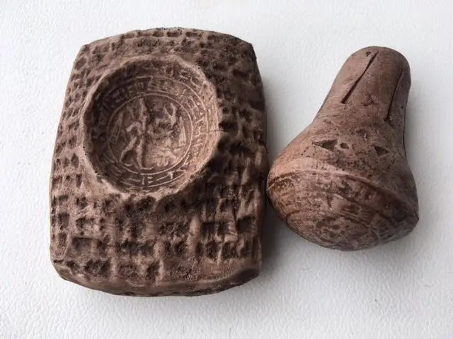

XIII ст. да Н. Х., рэпрадукцыя.
Хеты вядомы ў Бібліі ад часу Абрахама, які набыў у іх поле для пахаванняў і да часу Урыі Хета, які быў у войску Давіда. Таксама прарок Эзэкіэль крытыкаваў шлюбы гебраяў з хецеянкамі. Хеты адзін са старажытных народаў пра які доўга было вядома толькі дзякуючы Бібліі. Адкрыццё хецкай цывілізацыі ў ХХ ст. і далейшая дэшыроўка іх пісьменнасці стала чарговым прыкладам гістарычнасці Святога Пісання. Хецкае пісьмо мела ўплывы акадскага клінапіса і магчыма егіпецкай іерагліфікі. Менавіта Егіпет быў адным з галоўных канкурэнтаў Хецкай дзяржавы ў XІV – XIII стст. да Н. Х. У тую ж эпоху Майсей выводзіў ізраільскі народ з егіпецкага палону і сорак год хадзіў з ім у пустыні.